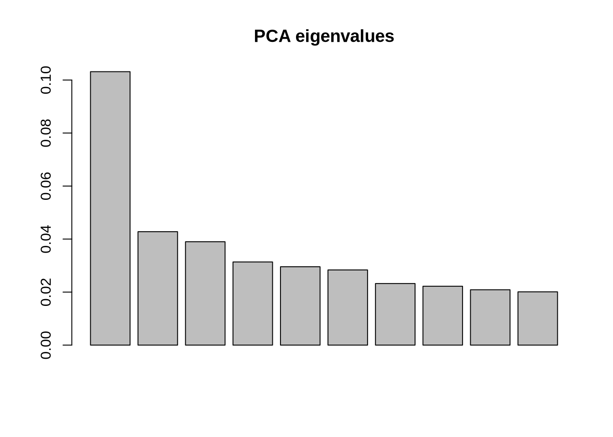
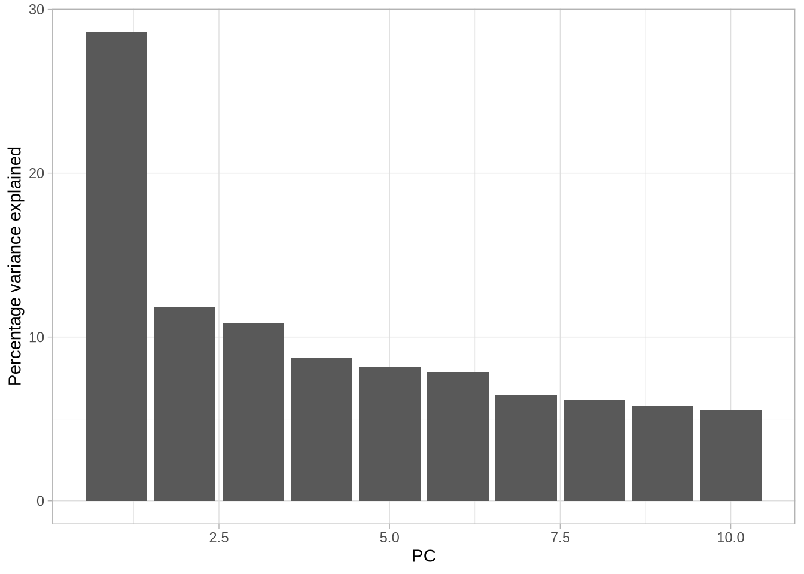
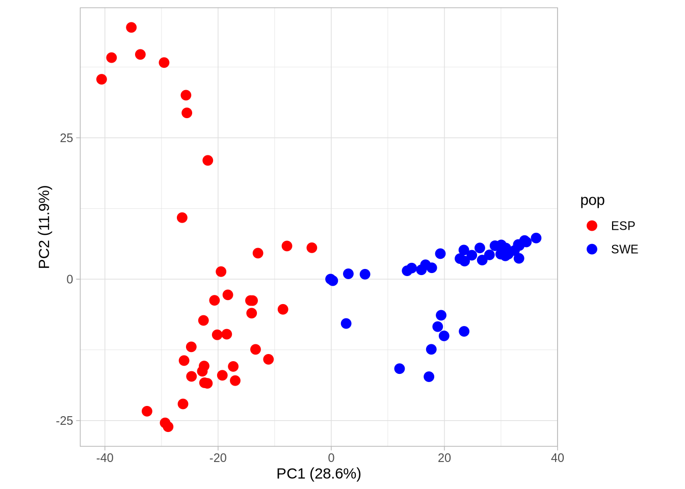
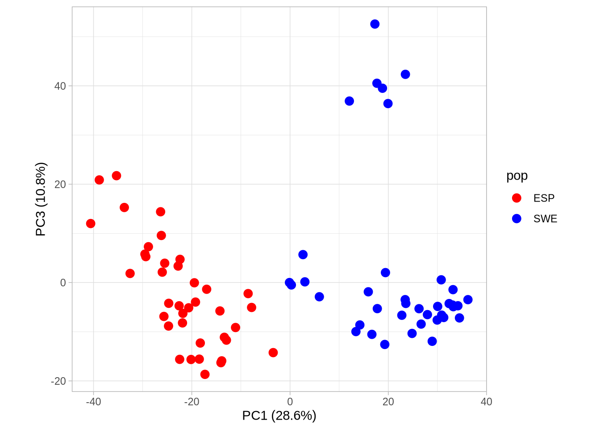
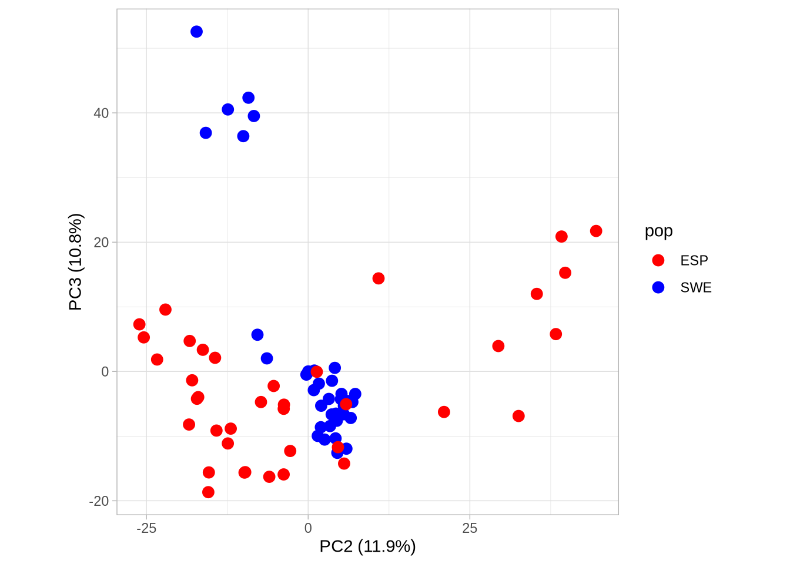
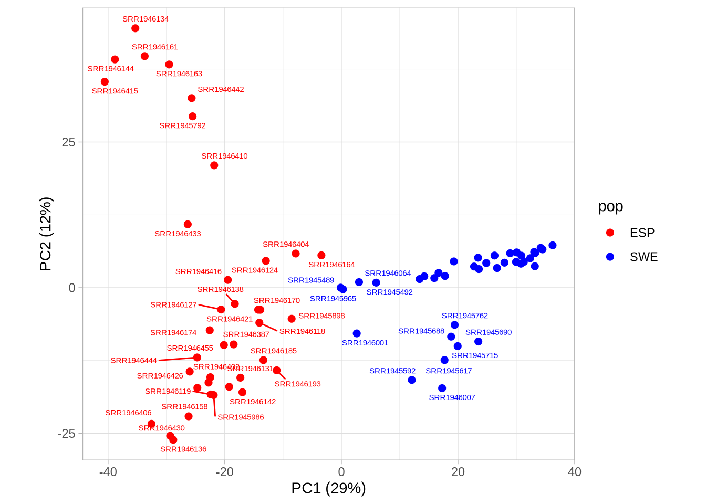

Code
### Step 1: Load necessary libraries ----
# These libraries help in handling VCF data, visualizing results, and performing PCA.
library(vcfR) # To work with VCF (Variant Call Format) files
library(tidyverse) # For data manipulation and visualization
library(adegenet) # For genetic data analysis
library(factoextra) # For enhanced PCA visualizations
library(FactoMineR) # For multivariate analysis (e.g., PCA)
library(RColorBrewer) # For beautiful color palettes
library(ggrepel) # For better label placement in ggplot
library(htmlwidgets) # For interactive widgets
### Step 2: Set working directory ----
# Set the directory where your data files are stored
setwd("/home/tahirali/RAMSES_mount/tali/qbio/Practical_Day_2/VCF2PCA") # Adjust path as needed
getwd() # Confirm the directory[1] "/home/tahirali/RAMSES_mount/tali/qbio/Practical_Day_2/VCF2PCA"Code
### Step 3: Input data ----
# Import metadata, VCF file, reference genome, and annotation file
accessions <- read.csv("Accesions.csv") # Metadata linking samples to populations
vcf <- read.vcfR("SWE_ESP_At_Chr4_BamQualFilt-f3Q30F264_nodup_DP_OnlyPolymorphic_shortNam_DP10GQ20Q30_Mis80NoIndel.vcf.gz", verbose = FALSE) # VCF file containing variants
dna <- ape::read.dna("At_Chr4.fasta", format = "fasta") # Reference genome sequence
gff <- read.table("At_Chr4.gff", sep="\t", quote="") # Genome annotation file
### Step 4: Perform PCA (Principal Component Analysis) ----
# PCA simplifies high-dimensional genetic data to a few informative axes.
# Convert VCF to a genind object (compatible with genetic data analysis tools)
genind_vcf <- vcfR2genind(vcf)
# Scale the data (normalize allele counts for PCA)
genind_vcf_scaled = scaleGen(genind_vcf, NA.method = "mean")
# Perform PCA with 10 axes retained
pca <- dudi.pca(genind_vcf_scaled, cent = TRUE, scale = FALSE, scannf = FALSE, nf = 10)
# Visualize eigenvalues (variance explained by each axis)
axis_all = pca$eig / sum(pca$eig)
barplot(axis_all[1:10], main = "PCA eigenvalues") # Barplot of variance explained
Code
### Step 5: Associate PCA results with metadata ----
# Map sample names and populations to PCA results
pca_axis <- pca$li
pca_eigenval <- pca$eig[1:10]
str(pca_axis)'data.frame': 76 obs. of 10 variables:
$ Axis1 : num 14.211 -0.118 5.967 17.765 12.074 ...
$ Axis2 : num 1.9641 0.0128 0.8732 2.0144 -15.8247 ...
$ Axis3 : num -8.62086 0.00503 -2.885 -5.29714 36.91014 ...
$ Axis4 : num -0.4681 0.0252 -2.5024 -2.922 28.1062 ...
$ Axis5 : num 3.7328 -0.0821 0.67 -1.0985 30.7881 ...
$ Axis6 : num -2.5632 -0.0331 -4.3249 -1.9293 -11.879 ...
$ Axis7 : num -1.4683 0.0241 -2.4562 1.7935 0.8952 ...
$ Axis8 : num -1.3808 -0.1064 0.0997 1.5308 0.8609 ...
$ Axis9 : num 1.4522 0.0134 0.8002 -3.1388 2.3339 ...
$ Axis10: num -5.962 0.101 -3.186 3.213 -5.38 ...Code
# set names
ind_names<- rownames(genind_vcf_scaled)
pca_axis$ind <- ind_names
ind_names [1] "SRR1945488" "SRR1945489" "SRR1945492" "SRR1945591" "SRR1945592"
[6] "SRR1945604" "SRR1945605" "SRR1945607" "SRR1945608" "SRR1945617"
[11] "SRR1945629" "SRR1945632" "SRR1945688" "SRR1945690" "SRR1945691"
[16] "SRR1945692" "SRR1945693" "SRR1945694" "SRR1945697" "SRR1945709"
[21] "SRR1945713" "SRR1945715" "SRR1945718" "SRR1945719" "SRR1945720"
[26] "SRR1945721" "SRR1945725" "SRR1945752" "SRR1945761" "SRR1945762"
[31] "SRR1945792" "SRR1945898" "SRR1945965" "SRR1945986" "SRR1946001"
[36] "SRR1946007" "SRR1946064" "SRR1946072" "SRR1946073" "SRR1946090"
[41] "SRR1946091" "SRR1946118" "SRR1946119" "SRR1946124" "SRR1946127"
[46] "SRR1946131" "SRR1946134" "SRR1946136" "SRR1946138" "SRR1946142"
[51] "SRR1946144" "SRR1946158" "SRR1946161" "SRR1946163" "SRR1946164"
[56] "SRR1946170" "SRR1946174" "SRR1946178" "SRR1946185" "SRR1946193"
[61] "SRR1946384" "SRR1946387" "SRR1946402" "SRR1946404" "SRR1946406"
[66] "SRR1946410" "SRR1946415" "SRR1946416" "SRR1946421" "SRR1946426"
[71] "SRR1946430" "SRR1946433" "SRR1946442" "SRR1946444" "SRR1946454"
[76] "SRR1946455"Code
# Add a new column named "Population" to your data frame
head(accessions) sample pop lat long cs admixture_group SRR_No
1 1254 SWE 59.4333 17.0167 CS77379 north_sweden SRR1945488
2 1257 SWE 59.4333 17.0167 CS77380 north_sweden SRR1945489
3 1552 SWE 63.0833 18.3667 CS77251 north_sweden SRR1945492
4 5856 SWE 63.0167 17.4914 CS76806 north_sweden SRR1945591
5 5860 SWE 62.6814 18.0165 CS77913 north_sweden SRR1945592
6 6009 SWE 62.8770 18.1770 CS76826 north_sweden SRR1945604Code
population_labels <- accessions[match(ind_names, accessions$SRR_No), "pop"]
pca_axis$Population <- population_labels # Add population info
pop <- population_labels
# remake data.frame
pca_2 <- as_tibble(data.frame(pca_axis, population_labels))
n <- length(pca_eigenval)
n # use this number PC=1:n[1] 10Code
### Step 6: Plot PCA results ----
# first convert to percentage variance explained
pve <- data.frame(PC = 1:n, pve = pca_eigenval/sum(pca_eigenval)*100)
# make plot
a <- ggplot(pve, aes(PC, pve)) + geom_bar(stat = "identity")
a + ylab("Percentage variance explained") + theme_light()
Code
# calculate the cumulative sum of the percentage variance explained
cumsum(pve$pve) [1] 28.60425 40.46850 51.28026 59.97823 68.17440 76.03698 82.47864
[8] 88.63700 94.42852 100.00000Code
# Plot PC1 vs PC2 with population colors
PC1_2 <- ggplot(pca_2, aes(Axis1, Axis2, col = pop)) +
geom_point(size = 3) +
scale_colour_manual(values = c("red", "blue")) +
coord_equal() +
theme_light() +
xlab(paste0("PC1 (", signif(pve$pve[1], 3), "%)")) + ylab(paste0("PC2 (", signif(pve$pve[2], 3), "%)"))
PC1_2
Code
# Plot PC1 vs PC3 with population colors
PC1_3 <- ggplot(pca_2, aes(Axis1, Axis3, col = pop)) +
geom_point(size = 3) +
scale_colour_manual(values = c("red", "blue")) +
coord_equal() +
theme_light() +
xlab(paste0("PC1 (", signif(pve$pve[1], 3), "%)")) + ylab(paste0("PC3 (", signif(pve$pve[3], 3), "%)"))
PC1_3
Code
# Plot PC2 vs PC3 with population colors
PC2_3 <- ggplot(pca_2, aes(Axis2, Axis3, col = pop)) +
geom_point(size = 3) +
scale_colour_manual(values = c("red", "blue")) +
coord_equal() +
theme_light() +
xlab(paste0("PC2 (", signif(pve$pve[2], 3), "%)")) + ylab(paste0("PC3 (", signif(pve$pve[3], 3), "%)"))
PC2_3 
Code
# Save plots to your working directory
ggsave("PCA12.png", PC1_2, width = 1800, height = 1200, units = "px")
ggsave("PCA13.png", PC1_3, width = 1800, height = 1200, units = "px")
ggsave("PCA23.png", PC2_3, width = 1800, height = 1200, units = "px")
# Create a labeled plot
pca_label <- ggplot(pca_2, aes(Axis1, Axis2, col = pop, label = ind)) +
geom_point(size = 2) + # size of points
geom_text_repel(show.legend = FALSE, size=2) + # Use geom_text_repel() for label repulsion
scale_colour_manual(values = c("red", "blue")) +
coord_equal() +
theme_light() +
xlab(paste0("PC1 (", signif(pve$pve[1], 2), "%)")) +
ylab(paste0("PC2 (", signif(pve$pve[2], 2), "%)"))
pca_label
Code
### Step 7: Interactive 3D Visualization ----
# Use plotly to create an interactive 3D plot of PCA results
library(plotly)
#3D plots
pca_3d <- plot_ly(pca_2, x = ~Axis1, y = ~Axis2, z = ~Axis3, color =pop, colors = c("red", "blue") ) %>%
add_markers(size = 12)
pca_3d <- pca_3d %>%
layout(
title = "Arabidopsis thaliana Accessions (Sweden & Spain)",
scene = list(bgcolor = "#e5ecf6")
)
pca_3dCode
saveWidget(pca_3d, "3D_PCA.html")
### Step 8: Multidimensional Splom Visualization ----
# Explore relationships between multiple principal components simultaneously
cumsum(pve$pve) [1] 28.60425 40.46850 51.28026 59.97823 68.17440 76.03698 82.47864
[8] 88.63700 94.42852 100.00000Code
tit = 'Total Explained Variance = 59.98 %'
axis = list(showline=FALSE,
zeroline=FALSE,
gridcolor='#ffff',
ticklen=4)
fig <- pca_2 %>%
plot_ly() %>%
add_trace(
type = 'splom',
dimensions = list(
list(label='PC1 (28.6%)', values=~Axis1),
list(label='PC2 (11.9%)', values=~Axis2),
list(label='PC3 (10.8%)', values=~Axis3),
list(label='PC4 (8.7%)', values=~Axis4)
),
color = ~pop, colors = c("red", "blue", "green"),
marker = list(
size = 7
)
) %>% style(diagonal = list(visible = F)) %>%
layout(
title= tit,
hovermode='closest',
dragmode= 'select',
plot_bgcolor='rgba(240,240,240, 0.95)',
xaxis=list(domain=NULL, showline=F, zeroline=F, gridcolor='#ffff', ticklen=4),
yaxis=list(domain=NULL, showline=F, zeroline=F, gridcolor='#ffff', ticklen=4),
xaxis2=axis,
xaxis3=axis,
xaxis4=axis,
yaxis2=axis,
yaxis3=axis,
yaxis4=axis
)
options(warn=-1)
fig